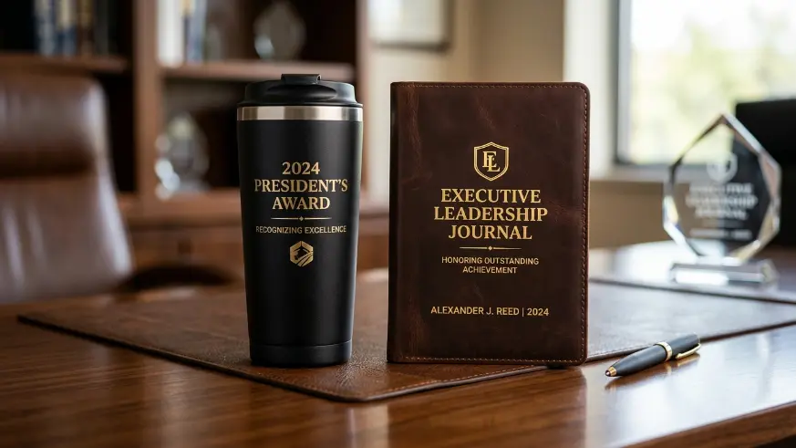
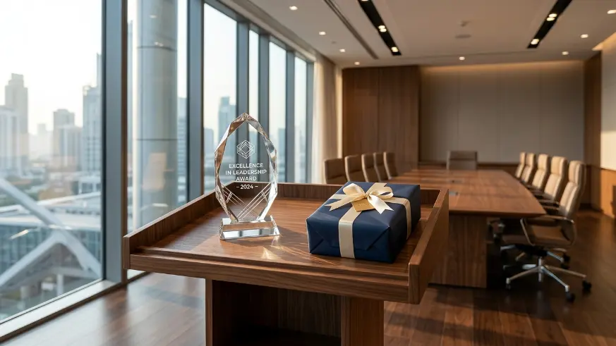

Employee appreciation gift set untuk karyawan berprestasi adalah paket hadiah yang disusun khusus untuk mengakui kontribusi unggul karyawan, dengan kualitas dan personalisasi yang lebih tinggi dibandingkan gift set apresiasi rutin.
Souvenir Kantor Jakarta menyediakan berbagai pilihan employee appreciation gift set yang dapat disesuaikan secara eksklusif dengan identitas dan budaya apresiasi perusahaan Anda.
Bagaimana Menyusun Employee Appreciation Gift Set untuk Karyawan Berprestasi?
Menyusun employee appreciation gift set untuk karyawan berprestasi dilakukan dengan memilih barang berkualitas lebih tinggi dan menambahkan pesan penghargaan yang menyebutkan kontribusi spesifik yang diakui.
Penyusunan gift set ini sebaiknya mempertimbangkan jenis prestasi yang diapresiasi, apakah berupa pencapaian target, inovasi kerja, atau kontribusi jangka panjang terhadap perusahaan.
Laporan mengenai employee recognition 2025 mencatat bahwa penghargaan yang disertai penjelasan spesifik mengenai alasan pemberian cenderung memberikan dampak kepuasan yang lebih tinggi dibandingkan penghargaan tanpa konteks yang jelas.
Selain barang fisik, penambahan elemen seperti sertifikat penghargaan atau catatan tulisan tangan dari manajemen turut memperkuat kesan personal dari employee appreciation gift set untuk karyawan berprestasi.
Pembahasan mengenai dampak emosional pemberian hadiah bagi karyawan dapat dibaca lebih mendalam pada artikel employee appreciation gift set yang membuat karyawan merasa dihargai.

Kombinasi item premium seperti agenda kulit, pulpen metal eksklusif, dan tumbler termal berlogo perusahaan.
Apa yang Membedakan Gift Set untuk Top Performer dengan Karyawan Lain?
Perbedaan gift set untuk top performer dengan karyawan lain terletak pada tingkat kualitas barang, personalisasi pesan, dan konteks pengakuan yang lebih spesifik terhadap kontribusi individu.
Gift set untuk top performer umumnya menggunakan material yang lebih premium dan kemasan yang lebih eksklusif dibandingkan gift set apresiasi rutin.
Selain itu, pesan yang disertakan biasanya lebih detail dan personal, menyebutkan pencapaian atau kontribusi spesifik yang menjadi alasan pemberian penghargaan tersebut.
Untuk inspirasi jenis souvenir elegan yang berkelas, Anda juga dapat menyimak artikel 7 souvenir kantor elegan untuk mitra bisnis dan profesional.
Bagaimana Memastikan Apresiasi Terasa Spesial bagi Karyawan Berprestasi?
Memastikan apresiasi terasa spesial bagi karyawan berprestasi dilakukan dengan menyesuaikan isi gift set, pesan penghargaan, dan momen pemberian dengan konteks pencapaian yang diakui.
Penyampaian apresiasi secara langsung oleh atasan atau manajemen, disertai penjelasan mengenai kontribusi yang diapresiasi, dapat memperkuat kesan spesial dari pemberian gift set tersebut.
Selain itu, menghindari penyamarataan bentuk apresiasi untuk seluruh karyawan tanpa mempertimbangkan tingkat kontribusi individu turut membantu menjaga kesan eksklusif dari penghargaan tersebut.

Apresiasi yang disampaikan langsung secara personal oleh manajemen menciptakan dampak kepuasan dan loyalitas yang mendalam.
Bagaimana Frekuensi Pemberian Gift Set Memengaruhi Nilai Apresiasi bagi Top Performer?
Frekuensi pemberian gift set dapat memengaruhi nilai apresiasi bagi top performer, di mana pemberian yang terlalu sering tanpa konteks jelas berpotensi menurunkan kesan eksklusif dari penghargaan tersebut.
Pemberian gift set untuk karyawan berprestasi sebaiknya dikaitkan dengan momen atau pencapaian tertentu, bukan diberikan secara acak tanpa alasan yang jelas.
Konsistensi dalam kriteria pemberian penghargaan membantu menjaga kredibilitas program apresiasi di mata seluruh karyawan.
Uraian mengenai momen khusus dan perayaan tahunan korporat dapat dilihat pada artikel ide gift set relasi bisnis tema akhir tahun.
Pemesanan di Souvenir Kantor Jakarta
Jika perusahaan Anda ingin menyusun program penghargaan bagi karyawan berprestasi, tim Souvenir Kantor Jakarta siap membantu merancang employee appreciation gift set yang sesuai dengan tingkat kontribusi tim Anda.
Layanan kami mencakup konsultasi konsep hadiah, kurasi barang-barang premium berkualitas, personalisasi nama dan logo, hingga pengiriman yang aman dan terkoordinasi langsung ke kantor Anda.
Hubungi kami sekarang untuk konsultasi program penghargaan karyawan berprestasi dan dapatkan penawaran terbaik.
Kesimpulan
Employee appreciation gift set untuk karyawan berprestasi paling efektif ketika disusun dengan kualitas barang yang sesuai, pesan penghargaan yang spesifik, dan konteks pemberian yang jelas.
Pendekatan ini membantu memastikan penghargaan benar-benar terasa bermakna bagi karyawan yang menerimanya, sekaligus mendorong motivasi positif serta loyalitas kerja di lingkungan perusahaan.
FAQ
Apa yang membuat gift set untuk karyawan berprestasi berbeda dari gift set biasa?
Gift set untuk karyawan berprestasi umumnya menggunakan material lebih premium dan pesan penghargaan yang lebih personal dibandingkan gift set apresiasi rutin.
Apakah perlu menyertakan pesan tertulis dalam gift set untuk top performer?
Ya, pesan tertulis yang menjelaskan kontribusi spesifik karyawan dapat memperkuat kesan penghargaan dan membuat apresiasi terasa lebih bermakna.
Seberapa sering gift set apresiasi sebaiknya diberikan kepada top performer?
Pemberian sebaiknya dikaitkan dengan momen atau pencapaian tertentu agar penghargaan tetap terasa eksklusif dan bermakna bagi penerimanya.